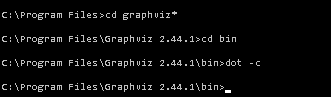

WARNING This translation need to be updated. WARNING PlantUML 用于绘制UML图,使用简单易读的文本描述。 请注意,因为这不会阻止您绘制不一致的图(例如,使两个类彼此继承)。 因此,它比"建模"工具更像是"绘图"工具。 Overall, PlantUML is a powerful and versatile tool for creating professional-looking diagrams quickly and easily. It is particularly well-suited for users who prefer a simple, text-based approach to creating diagrams, and who want a tool that can automatically handle the layout and appearance of their diagrams. In essence, PlantUML emerges as a potent and adaptable tool, facilitating the swift and effortless creation of professional diagrams. It caters especially to individuals who favor a text-based methodology for diagram creation, offering automated assistance in managing the layout and visualization of the diagrams. WARNING This translation need to be updated. WARNING 您可以使用PlantUML的主题来定制图表的外观。 PlantUML提供了几个内置主题供您使用， 你也可以定义您自己的颜色和样式来创建自己的自定义主题。 - PlantUML does a lot of layout work for you
PlantUML takes care of a lot of the layout work for you, so you can focus on expressing the relationships and structure of your diagram. It uses intelligent layout algorithms to arrange the elements of your diagram in a clear and easy-to-understand way, saving you the time and effort of manually positioning and aligning individual elements. This makes it a great tool for quickly creating professional-looking diagrams without a lot of manual effort. - PlantUML is a generator, not a position elements tool
PlantUML is a generator, which means that it automatically creates diagrams based on the text you provide. This is different from some other diagramming tools, which allow you to manually position and arrange individual elements in your diagram. The main advantage of this approach is that it allows you to create diagrams quickly and easily, without having to worry about the specific placement of individual elements. It also makes it easier to update your diagrams, since you can simply modify the text that represents your diagram, and PlantUML will automatically update the diagram to reflect your changes. One potential disadvantage of using a generator like PlantUML is that you may not have as much control over the exact layout of your diagram as you would with a tool that allows you to position elements manually. However, for many users, the time and effort saved by using a generator more than makes up for this limitation. Additionally, the PlantUML community forum is a great resource for finding solutions to common layout problems and sharing tips and tricks for customizing the appearance of your diagrams. For those seeking advice or solutions to common layout issues, the PlantUML community forum stands as a vibrant platform to exchange tips and procure answers to your dilemmas, enhancing your mastery over customizing your diagrams. WARNING This translation need to be updated. WARNING 由PlantUML服务器生成的png或svg的链接永远有效(只要服务器启动即可)。
但是,我们不会在服务器上存储任何图表。 这听起来可能是矛盾的。事实并非如此:整个图是压缩到URL本身。服务器接收到URL后,会对URL进行解压缩以检索图文本并生成图像。无需存储任何内容。即使服务器已关闭,您也可以使用带有[[command-line |command line]]的标志-decodeurl来检索该图。此外,图表数据存储在PNG元数据中,因此您甚至可以从下载的图像中获取它。 有时,我们可能会在服务器上激活HTTP跟踪。这主要是为了解决性能问题(如果有的话),以了解我们获得的流量。解决问题后,我们将关闭HTTP跟踪,并删除日志。 请注意,我们还计算了生成的图的数量(打印在主页上)以衡量常规服务器负载。 关于敏感内容:即使我们不存储生成的图表,也请注意所有流量都通过HTTP进行,因此很容易捕获。 因此,如果计划生成包含敏感信息的图表,则可能应该在自己的网络上安装本地服务器。 WARNING This translation need to be updated. WARNING PlantUML 已安装在各种系统上,并且一些用户在安装它时报告了较小的问题。
您可以看看[[faq-install |在此页面上]],如果出现问题,它会给出建议。 您具有有关Graphviz [[graphviz-dot |此处]]的详细信息,以及进行[[graphviz-dot#test |此处]]的快速测试。 以下版本已经过测试,可以正常使用: - 2.26.3
- 2.28
- 2.30.1
- 2.34
- 2.36
- 2.38
- 2.44
请注意,版本2.39和2.42 在PlantUML中无法很好地工作。 With version 2.44, under Windows, you may have to run dot -c in a command line to finalize the installation, like in the following example:  You may have to run dot -c with Administrator Right. Another option is to install Win32 version of GraphViz 2.44 which does not require this post-install process. 如果您自己编译Graphviz,则必须使用libexpat构建它,以便使用PlantUML。 WARNING This translation need to be updated. WARNING Google趋势有点积极。并且有[[https://www.google.com/search?tbm=bks&q=plantuml |几本提到PlantUML的书]]。是的,它很成熟。 请注意, PlantUML 是在考虑[[http://en.wikipedia.org/wiki/Continuous_integration |连续集成]]的情况下开发的。这意味着有很多新版本具有(希望!)向后兼容。因此文件 PlantUML.jar 可能会随着时间的推移而更改,同时保持相同的名称。 如果您想知道所使用的确切版本,可以在命令行中输入:
java -jar plantuml.jar -version
或使用以下小型特殊图表说明:
@startuml
version
@enduml
要检查是否有较新的版本可供下载,您可以转到下载页面。 您还可以订阅以下rss流: 或者您可以使用命令行:
java -jar plantuml.jar -version
或使用以下小特殊图描述:
@startuml
version
@enduml
PlantUML将图像的宽度和高度限制为4096。您可以设置一个环境变量来覆盖此限制:PLANTUML_LIMIT_SIZE。您必须在启动PlantUML之前定义此变量,例如:
set PLANTUML_LIMIT_SIZE = 8192
要么
setenv PLANTUML_LIMIT_SIZE 8192
另一种方法是命令行中的选项:
java -DPLANTUML_LIMIT_SIZE = 8192 -jar /path/to/plantuml.jar ...
请注意,如果生成非常大的图表(例如,类似20000 x 10000像素的东西),则可能会遇到一些内存问题。解决方案是将此参数添加到java vm中:-Xmx1024m。 WARNING This translation need to be updated. WARNING 字符编码是一件微妙的事情……默认情况下,PlantUML使用平台的默认字符集,该字符集可以为UTF-8,也可以不是。如果您想知道使用的是哪个字符集,可以键入以下命令:
java -jar plantuml.jar -help
...
-charset XYZ要使用特定的字符集(默认为Windows-1252)
...
如果要使用其他字符集,例如UTF-8,则可以使用-charset标志:
java -jar plantuml.jar -charset UTF-8 ...
您还可以找到此处有关unicode的信息。请注意,即使Java 不支持B.O.M. (以UTF-8格式文件的字节顺序标记),在PlantUML中已经添加了解决方法,因此这不应该成为问题。 一些日本用户报告说,在启动PlantUML之前,必须在其shell中将LANG变量设置为ja_JP.UTF-8。
export LANG = ja_JP.UTF-8
由于新架构,它应该简单地起作用,因为Java知道如何绘制东亚字符。 您可以在命令行中使用-eps标志,也可以在ANT任务中使用format="eps"。 You can use the ``-teps`` flag in the command line, or ``format="eps"`` in [the ANT task](ant). WARNING This translation need to be updated. WARNING 工作是进行中。 简单来说:启动图时,您必须使用@startuml(或@startditaa/@startjcckit ...)。 具体来说: @startuml/@startditaa/@startjcckit可用于确定图的类型(uml,ditaa,jcckit ...),因为您可以选择将文件名放在@startXYZ之后。这也允许在同一文件中包含多个图表。 早期版本的PlantUML不支持ditaa或jcckit。当使用-pipe标志时,由于该图是生成到标准输出的,因此标准输入中可能只有一个图。并且无需指定文件名。由于所有这些原因,当时使用-pipe标志时,不需要@startuml。 后来,已经决定对此进行标准化,并在所有位置加上@startXYZ,即使使用-pipe标志,因为这会使用户感到困惑。不幸的是,由于某些现有脚本已经使用了-pipe标志中不需要@startuml的事实,因此决定将其保留为deprecated选项,只是为了允许运行较旧的脚本。我们确实的确注意了兼容性的提升。 对于较新的脚本,您不应依赖于此,而应将@startXYZ/@endXYZ与-pipe标志一起使用。 WARNING This translation need to be updated. WARNING PlantUML是根据GPL许可分发的。
您可以使用命令行选项来打印许可证:
java -jar plantuml.jar -license
或者,您可以使用特殊图表:
@startuml
license
@enduml
您还可以使用: 这些版本缺少一些功能(例如DITAA),但是100％能够生成UML图。 您可以使用命令行选项打印这些版本的许可证:
java -jar plantuml.jar -license
或者,您可以使用特殊图表:
@startuml
license
@enduml
不。 由PlantUML的"执行"生成的图像(无论其格式为:PNG,SVG ...)均归其相应源代码(即,以PlantUML语言编写的文字描述)的作者所有。 PlantUML的执行生成的图像不被视为被覆盖的作品。您可以与他们一起做任何您想做的事。 然后可以在不参考GPL/LGPL/ASL/EPL/MIT许可的情况下使用生成的图像。甚至没有必要规定它们是由PlantUML生成的,尽管PlantUML团队将不胜感激。 有一个例外:如果某些许可证(例如GPL/LGPL/ASL/EPL/MIT)也涵盖了PlantUML语言的文本描述,则从逻辑上讲,此许可证涵盖了生成的图像。 WARNING This translation need to be updated. WARNING 只要不修改Java源代码和jar文件,就可以将PlantUML.jar集成到您自己的封闭源代码软件中。 唯一的限制是您必须在自己的许可证或文档中的某处提到您正在使用PlantUML,并且PlantUML是根据LGPL发行的。 然后,您甚至可以无限制地出售您的软件并赚钱(尽管在这种情况下捐赠者将不胜感激:-) PlantUML语法本身没有许可证:这意味着每个人都可以使用它。 因此,您可以在自己的代码中使用PlantUML注释:这些注释是您自己拥有的,不被视为涵盖的工作,并且不受GPL/LGPL/APL/EPL/MIT许可的约束。 GPL,LGPL,ASL,EPL或MIT仅许可当前的实现(即PlantUML程序)。另一方面,在PlantUML网站上发布的文档(示例,声明,...)受版权保护。但是您仍然可以编写自己的文档。 PlantUML正在使用Graphviz生成一些图。因此PlantUML正在启动dot程序,并检索dot生成的信息作为SVG流。 此消息表示PlantUML正在点执行中获得空流,因此无法生成UML图。发生这种情况可能有几个原因: *您的Graphviz安装存在问题。尝试一个非常简单的图表,例如仅一个类。 *您的Graphviz版本太旧,并且因PlantUML提供的信息而崩溃。使用testdot检查您的版本 *您的图太复杂了。 如果你有错误信息java.lang.NoClassDefFoundError: Could not initialize class net.sourceforge.plantuml.ugraphic.UFont ，这可能意味着你的服务器上没有安装字体。 你可以通过在你的系统上添加fontconfig 来解决。
sudo yum install fontconfig
or
sudo apt-get install fontconfig
WARNING This translation need to be updated. WARNING 如果您在没有图形功能的Linux服务器上运行PlantUML,则可能会有一些错误消息: - 无法连接到X11窗口
- X11连接由于身份验证错误而被拒绝。
- HeadlessException
基本上,这是因为PlantUML需要访问某些图形资源(更多此处的信息)。 您可以使用标志-Djava.awt.headless = true将PlantUML设置为无头模式。 例如:
/usr/bin/java -Djava.awt.headless = true -jar /data/PlantUml/plantuml.jar ...
If you see a similar message on MacOS Ventura after running `plantuml` with no arguments, this is a [known issue](https://github.com/plantuml/plantuml/issues/275) but does not appear to indicate a problem since sub-commands (like `-gui`) do work. WARNING This translation need to be updated. WARNING 在Mac OS X下,如果出现以下错误消息:
Error java.lang.UnsatisfiedLinkError / liblwawt.dylib /libosxapp.dylib
您需要按照http://stackoverflow .com/questions/25914757/osx-yosemite-jvm-shared-library-does-not-contain-the-jni-createjavavm-symbol: -下载并安装软件包:JavaForOSX。 -找到文件AptanaStidio3.ini,该文件默认位于以下目录下:/Applications/Aptana Studio 3/AptanaStudio3.app/Contents/MacOS -添加-vm参数以指定将用于午餐Aptana Studio的Java:-vm /Library/Java/JavaVirtualMachines/1.6.0.jdk/Contents/Home/bin/java 这似乎仅在Java 6下有效,因此您可以定义以下别名以在脚本中使用。
alias java6="export JAVA_HOME=$(/usr/libexec/java_home -v 1.6.0)"
根据您的配置,您可以尝试使用标志-Djava.awt.headless = true。 例如:
/usr/bin/java -Djava.awt.headless = true -jar /path/to/plantuml.jar ...
命令行中有一个-cypher选项,它生成一个.preproc文件而不是常规图像文件。 生成的.preproc文件看起来像输入图,期望所有单词(PlantUML语言关键字除外)均已被随机字母集代替。 您可以通过多次运行-cypher选项来再次检查(每次都会得到不同的文本)。 您还可以查看用于执行此转换的Cypher.java类请确保那里没有后门可用于找回原始图。 如果原始图中存在问题,则经过加密的图中也可能发生相同的问题。 由于密文实际上是毫无意义的,因此您可以安全地与我们分享该文本:我们无法猜测您的实际工作。 但是我们将能够重现此问题并解决它,以便您可以使用原始(机密)图表。 WARNING This translation need to be updated. WARNING 如果您有以下错误消息: 当前显示的页面包含无效值 显示Windows/Preferences/PlantUML时,应尝试退出Eclipse并在命令行上使用-clean标志:
eclipse -clean
您可以使用论坛。 有人会在那里尝试回答您的问题。 | |